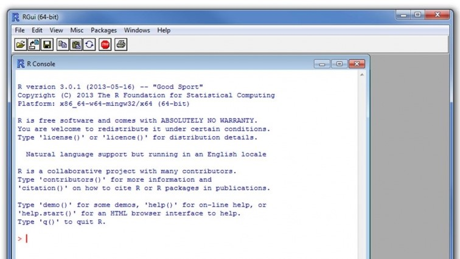
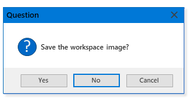

leaRn tutorials
English
Installation of base R for Microsoft Windows
This manual walks you through the installation of the R statistical software for personal computers and laptops.
Please read this installation manual carefully before installing and follow the instructions point by point!
It is assumed that you have Microsoft Windows versions 7, 8.1, 8.2 or 10. Any problems?
Now, we are ready for the installation:
- Follow this link to download the file
R-4.0.3-win.exe, and save the file to your desktop or the download folder. - Once the file has been downloaded, navigate with the explorer (i.e., file manager) to the place where you have saved the downloaded file
R-4.0.3-win.exe. - Double click the file
R-4.0.3-win.exeto start the installation. Now, a dialog window opens that guides you through the following steps: - Choose your language: and click on next
- The Software License is shown; click on next
- Select the destination folder. By default, R will be installed into the folder
C:\Users\...; click on next - Select components: Do not change the default settings; click on next
- Startup options: Do not change the default settings; click on next
- Select start menu folder: Do not change the default settings; click on next
- Select additional tasks: Do not change the default settings; click on next
- Now, R is being installed...
- Once R has been installed, we want to test if it runs properly (see here)
Testing R
Let's check whether base R has been properly installed.
- Go to the start menu and check whether the following two programs are there (in Section 'R' of all listed programs)
 R
R x644.0.3- R
i3864.0.3 - Fine, you have sucessfully installed the base R software.
- Which one of the two programs shall I use? We recommend to use the
x64variant. - Now, start R
x644.0.3 from the start menu. A window titled 'RGui (64-bit) should pop up (see figure, below). This means R is up and running.'

- Ok, let's quit the R program. To this end, go to
"File"in the menu bar and select"Exit". - A dialog pops up that asks us whether we want to save the workspace. Click on
"No".
